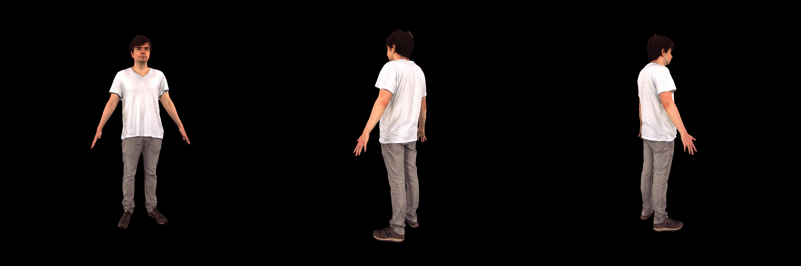
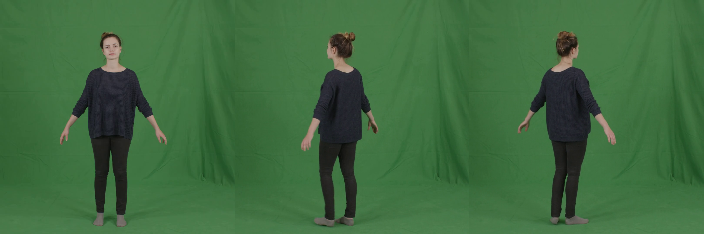
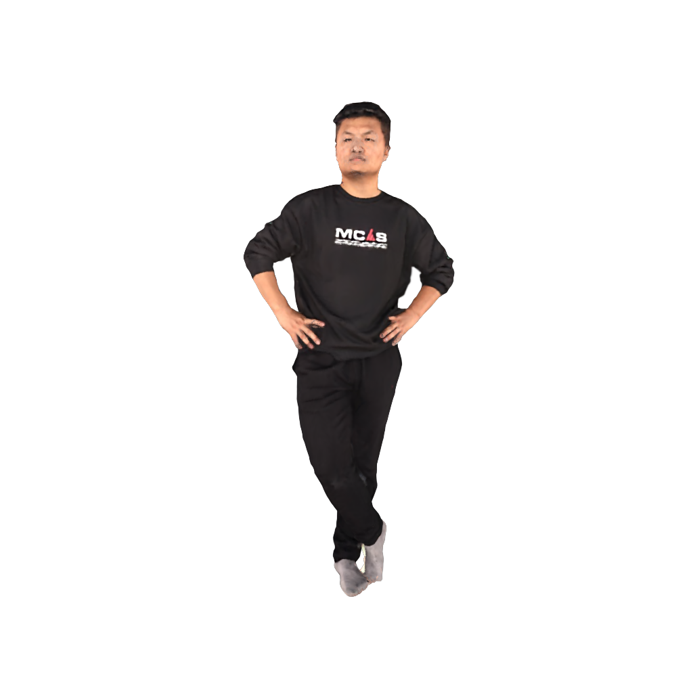
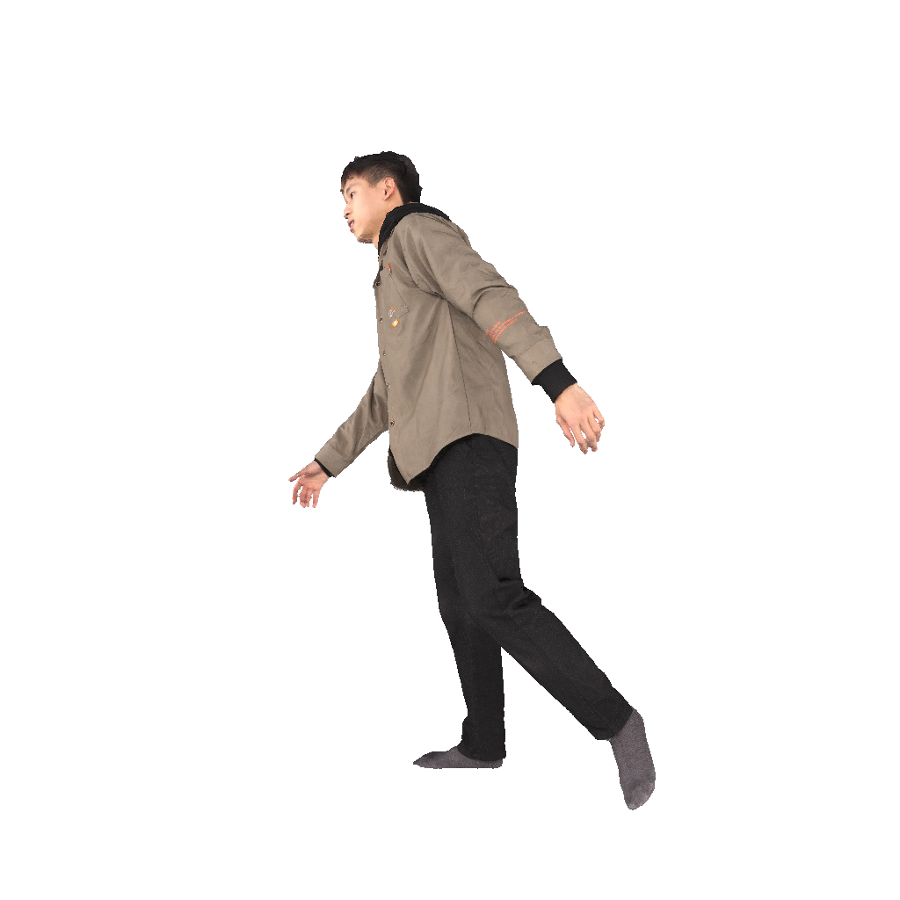

- University of Illinois at Urbana-Champaign
Abstract
Generalizable rendering of an animatable human avatar from sparse inputs relies on data priors and inductive biases extracted from training on large data to avoid scene-specific optimization and to enable fast reconstruction. This raises two main challenges: First, unlike iterative gradient-based adjustment in scene-specific optimization, generalizable methods must reconstruct the human shape representation in a single pass at inference time. Second, rendering is preferably computationally efficient yet of high resolution. To address both challenges we augment the recently proposed dual shape representation, which combines the benefits of a mesh and Gaussian points, in two ways. To improve reconstruction, we propose an iterative feedback update framework, which successively improves the canonical human shape representation during reconstruction. To achieve computationally efficient yet high-resolution rendering, we study a coupled-multi-resolution Gaussians-on-Mesh representation. We evaluate the proposed approach on the challenging THuman2.0, XHuman and AIST++ data. Our approach reconstructs an animatable representation from sparse inputs in less than 1s, renders views with 95.1FPS at 1024x1024, and achieves PSNR/LPIPS*/FID of 24.65/110.82/51.27 on THuman2.0, outperforming the state-of-the-art in rendering quality.
Novel view synthesis
In the following we present 360° freeview rendering and the comparison to GHG [1].
[1] Kwon, Youngjoong, et al. "Generalizable human gaussians for sparse view synthesis." ECCV 2024.
[1] Kwon, Youngjoong, et al. "Generalizable human gaussians for sparse view synthesis." ECCV 2024.
Ground truth
GHG
Ours
Cross-domain generalization
In the following we show our method in cross-domain generalization. Our model is trained on THuman2.0. We apply to subjects in other datasets without finetuning.
XHuman
The XHuman dataset provides 3D scans and corresponding SMPL-X poses. We render source images and input subject masks from the 3D scans and use the poses provided by the dataset as inputs.
In the first two examples, we take as inputs multiview images. In the last two examples, we take source images sampled from different frames, where the poses are different.
In the first two examples, we take as inputs multiview images. In the last two examples, we take source images sampled from different frames, where the poses are different.

Source images
Ground truth
PeopleSnapshot
The PeopleSnapshot provides monocular videos. We sample frames from the videos as source images. We follow ExAvatar to predict the SMPL-X poses and subject masks from the videos. Note that the input poses are not necessarily aligned.

Source images
Ground truth
DNA-Rendering
The DNA-Rendering dataset provides multiview videos and corresponding SMPL-X poses. We sample multiview images from the dataset. We directly use the provided subject masks and SMPL-X poses as inputs. Note that the provided SMPL-X poses are not accurate enough, especially faces.

Source images
Ground truth
Novel pose synthesis
In the following we present novel pose synthesis. We retarget the subject to new pose sequences from the BEDLAM dataset.


Reference images
Novel pose synthesis
Cross-domain examples
Citation
If you find our project useful, please consider citing:AخA
@inproceedings{wen2025lifegom,
title={{LIFe-GoM: Generalizable Human Rendering with Learned Iterative Feedback Over Multi-Resolution Gaussians-on-Mesh}},
author={Jing Wen and Alex Schwing and Shenlong Wang},
booktitle={ICLR},
year={2025}
}